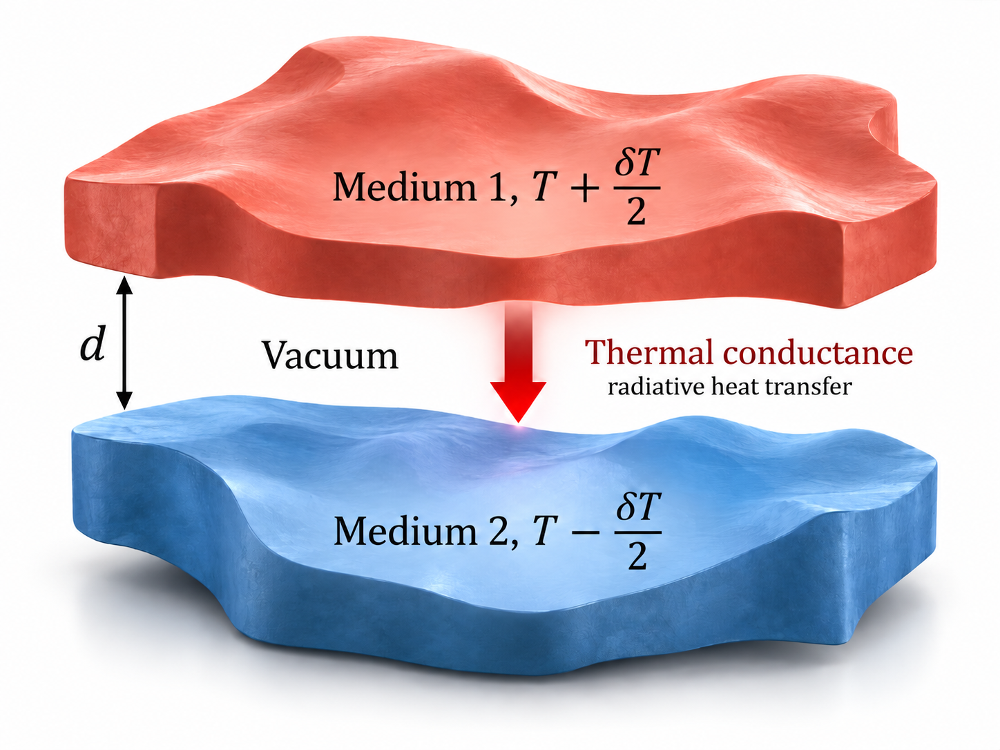
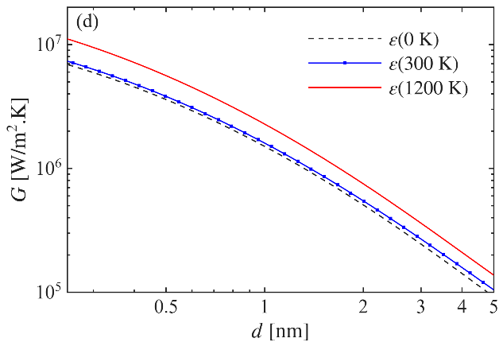
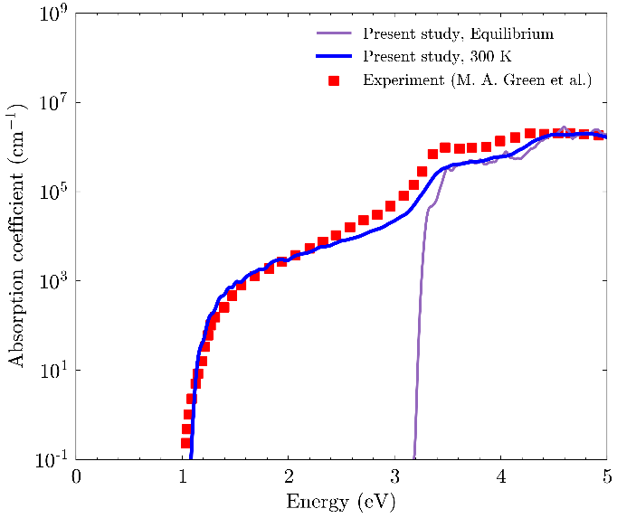
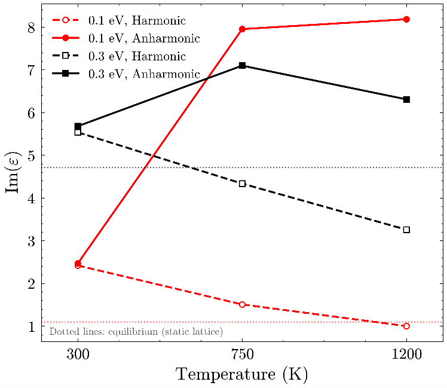
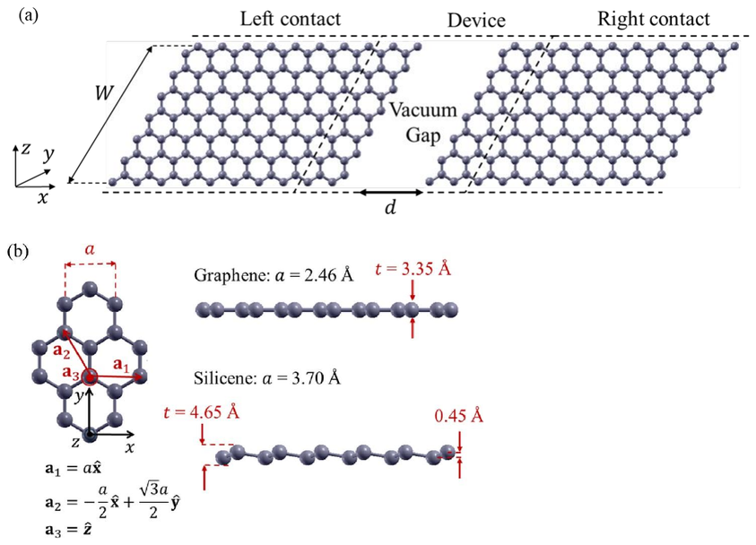
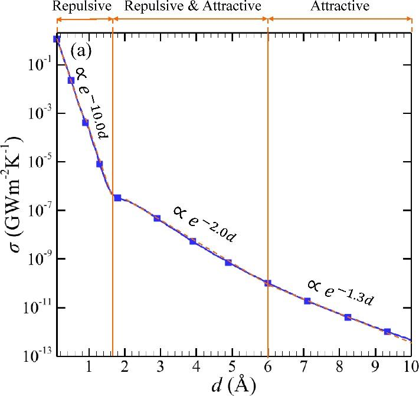

I predict heat transfer where classical models fail. Three first-author papers, one question: what really happens when heat crosses a nanoscale gap at real operating temperatures?
Every prediction of nanoscale thermal radiation depends on one material input: the dielectric function. The whole field computes it at 0 K, then applies it to systems running at 1000 K. Nobody had measured the cost of that shortcut.
Computed graphene's dielectric function at its actual temperature, 300 to 1200 K, from first principles, with phonon excitations and anharmonicity included. Fed it into NEGF heat transfer calculations.
The 0 K shortcut underpredicts radiative conductance by 32–43% at 1200 K. Anharmonic phonons alone account for up to 25.6% at 750 K. Temperature-true properties are not a refinement. They are the difference between right and wrong.


Tools: NEGF, DFT, anharmonic special displacement method, Quantum ESPRESSO, Yambo, HPC
The infrared dielectric function drives thermal radiation, sensing, and optoelectronics. Measuring it at every temperature is impractical. Computing it usually stops at 0 K.
Built a validated first-principles pipeline: Quantum ESPRESSO electronic structure on thermally displaced atoms, Yambo many-body calculations on top. Handles metals, semiconductors, and 2D materials, with harmonic and anharmonic lattice effects.
Tested on graphene, silicon, and gold. Computed silicon absorption at 300 K lands on the experimental data. The static-lattice calculation misses everything below the band gap. The output is temperature-resolved dielectric data that heat transfer models can use directly.


Tools: DFT, DFPT phonons, many-body perturbation theory, SDM/ASDM, Quantum ESPRESSO, EPW, Yambo, HPC
At sub-nanometer separations, lattice vibrations carry heat straight across a vacuum gap. This sets thermal limits in heat-assisted magnetic recording and scanning probe microscopy, and it controls how cracks and voids block heat in materials. For 2D materials, no one had the numbers.
Modeled phonon conductance between graphene and silicene nanoribbons with the atomistic Green's function method, verified against three independent published benchmarks first.
A 0.2 Å gap, one fifth of a bond length, already cuts conductance by over an order of magnitude. The decay is exponential in three regimes set by the interatomic forces: e−10.0d, e−2.0d, then e−1.3d. Silicene overtakes graphene beyond 0.8 Å because of its longer bonds.


Tools: Atomistic Green's function method, Tersoff and Lennard-Jones potentials, MATLAB, HPC
Finite element simulations of natural, mixed, and conjugate convection in cavities with rotating cylinders, heat-generating bodies, and nanofluids. Quantified how geometry, rotation, heating conditions, and nanofluid loading change thermal performance. Published in International Communications in Heat and Mass Transfer and Journal of Heat Transfer. Mentored undergraduates through the full CFD workflow.
Tools: Finite element method, CFD, COMSOL Multiphysics, MATLAB